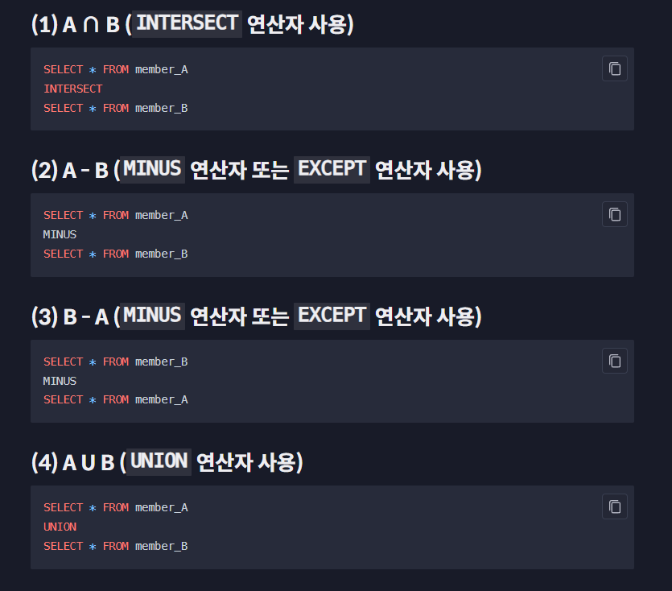

00. sql quiz
Q1
1 ’일정한 체계 속에 저장된 데이터의 집합’을 무엇이라고 하나요?
- 데이터베이스
2 하나의 컴퓨터 안에는, 하나의 데이터베이스 그리고 그 안에 한 개의 테이블만 생성할 수 있다.’ 이 말은 맞는 말일까요?
- X, 하나의 컴퓨터에서도 여러 개의 데이터베이스를 생성할 수 있고, 하나의 데이터베이스 안에서는 여러 개의 테이블을 만들 수 있습니다.
3‘테이블에서 하나의 개체를 나타내는 것은 _____, 개체의 각 속성을 나타내는 것은 _____ 이다.’
빈 칸에 들어갈 말이 순서대로 옳게 짝지어진 것은?
- row, column
4 ’DBMS는 ’Database _____ System’의 약자입니다. _____ 안에 들어갈 영어 단어를 직접 적어보세요.
- Management
5 DBMS를 다루기 위해 사용하는 언어인 SQL은 Structured _____ Language의 줄임말인데요. 괄호 안에 들어갈 말은 무엇일까요?
- Query
6 2020년 6월 기준으로, 기업용 데이터베이스 시장에서 오라클이라는 DBMS로 막대한 영향력을 끼치고 있고, MySQL이라는 DBMS 또한 소유 및 관리하고 있는 회사의 이름은 무엇일까요? 영어 단어로 적어보세요.
- 0racle
7 MySQL 등의 많은 DBMS는 ‘_____ - 클라이언트’ 구조로 동작합니다. 이 사실을 알아야 DBMS를 사용할 때 혼란이 없는데요. _____ 에 들어갈 단어는 무엇일까요?
- 서버
8 MySQL로 codeit_nanda라는 데이터베이스를 만들려고 합니다. 아래와 같은 SQL 문을 실행할 건데요.
create database codceit_nanada;Q2
이전 영상에서 말한 대로 이런 Primary Key는 테이블에서 특정 row 하나를 식별하는 역할을 합니다. 특정 컬럼을 Primary Key로 설정하면 Primary Key에 같은 값이 있는 row가 추가되는 것을 DBMS가 자동으로 막아주기 때문에 중복된 row가 생길 위험성이 사라집니다.
이런 Primary Key는 당연히 특정 row를 고유하게 나타낼 수 있는 값을 가진 컬럼으로 설정해야겠죠?
Primary Key의 종류에는 크게 두 가지가 있습니다. 바로 Natural Key와 Surrogate Key인데요. 각각 무엇인지 살펴봅시다.
- Natural Key 실제로 어떤 개체가 갖고 있는 속성을 나타내는 컬럼이 Primary Key가 됐을 때 이를 Natural Key라고 합니다. 사람은 주민등록번호로 특정 인물을 식별할 수 있습니다. 우리가 읽는 책은 ISBN이라고 하는 번호로 특정할 수 있구요. 바로 이런 속성을 나타내는 컬럼이 Primary Key가 되면 Natural Key라고 합니다.
현재 우리의 member 테이블에서는 email 컬럼이 각 회원을 식별할 수 있는 실제 속성입니다. 만약 제가 id 컬럼 말고 email 컬럼을 Primary Key로 설정했다면 Primary Key가 Natural Key인 겁니다. 하지만 저는 email 컬럼말고 id 컬럼을 Primary Key로 설정했는데요. 이에 대한 설명을 바로 이어서 할게요.
- Surrogate Key 이건 제가 설정했던 id 컬럼같은 Primary Key를 의미합니다. 사실 id 컬럼은 어떤 회원의 속성을 직접적으로 나타내는 컬럼은 아닙니다. 단지 제가 Primary Key로 사용하기 위해 인위적으로 생성한 컬럼이죠. 이렇게 어떤 개체의 실제 속성은 아니지만 Primary Key로 쓰기 위해 추가한 컬럼을 Surrogate Key라고 합니다. 이런 Surrogate Key에는 주로 1부터 순차적으로 증가하는 숫자가 들어가게 됩니다. 잠깐 다시 member 테이블의 id 컬럼을 볼까요?
이렇게 id 컬럼에 1부터 시작해서 순차적으로 증가하는 값이 적혀있죠? 이 상태에서는 id 컬럼의 값으로 특정 row를 식별할 수 있으니 당연히 Primary Key의 역할을 할 수 있습니다.
그럼 Natural Key와 Surrogate Key 중에 어느 것이 더 좋을까요? 정답은 없습니다. 각 상황마다 적절한 키가 달라지는데 이것은 데이터베이스에 관해 깊게 공부하고 나서야 이해할 수 있는 부분이기 때문에 생략하겠습니다. 하지만 Natural Key는 그 값이 나중에 변경되면 모든 row의 값을 다시 수정해줘야 한다는 문제 등(가능성은 낮지만 사람의 주민등록번호가 변경되는 경우가 생길 수도 있겠죠?)이 있기 때문에 보통은 Surrogate Key를 선택하는 경우가 더 많습니다.
일단은 Primary Key의 종류에 크게 2가지가 있다는 것을 기억하고, 실무에서 만나게 될 테이블의 Primary Key가 이 2가지 중 어디에 해당하는지만 구분할 수 있으면 충분합니다.
이번 레슨은 어땠나요?
Q3
이전 노트에서 저는 회원이 가진 속성을 나타내는 컬럼 대신, 인위적으로 추가한 id라는 컬럼을 member 테이블의 Primary Key로 설정했고, 이런 Primary Key를 Surrogate Key라고 한다고 했습니다. 그리고 Surrogate Key는 보통 1부터 시작해서 1씩 증가하는 정수값을 갖는다고 했는데요.
그렇다면 매번 새롭게 추가되는 row의 id 컬럼의 값은 이전 row의 id 컬럼의 값보다 1이 더 큰 정수가 되어야겠죠? 그런데 대부분의 DBMS에는 매번 새로운 row가 추가될 때마다 id 컬럼에 이전보다 1이 더 큰 정수를 자동으로 넣어주는 기능이 존재합니다.
MySQL에 있는 기능을 보여드릴게요.
지금 Workbench에서 member 테이블의 컬럼 구조를 보면,
AI라고 써있는 부분이 보입니다. 여기서 AI는 Auto Increment의 약자로 ’자동 증가’라는 뜻입니다. 이게 무슨 말일까요?
자, 그림으로 설명해드릴게요. 맨 처음 생성된 직후의 member 테이블은 이런 모습일 겁니다.
그 후에 각 회원을 나타내는 새로운 row들이 추가되면서, 점점 이런 모습을 갖추게 되겠죠?
그리고 각 row를 추가할 때마다 id 컬럼의 값, ‘회원의 이메일 주소’, ‘나이’, ‘성별’ 등을 모두 지정해서 추가해야할 겁니다.
하지만 이미 설명했듯이 Surrogate Key인 id 컬럼은 사실 회원이 실제로 갖는 속성을 나타내지는 않습니다. 그래서 우리가 id 컬럼에 값을 실제로 넣고 row를 추가하기보다는,
id 컬럼에 항상 유일한 값이 들어간다는 보장만 있으면, 누군가가 대신 id 컬럼의 값을 넣어주는 게 더 편리할 겁니다. 방금 본 Auto Increment 속성을 컬럼에 설정하면, 해당 컬럼에 관해서는 DBMS가 ’자동으로 증가’하는 값을 넣어줍니다.
그럼 한번 id 컬럼에 Auto Increment 속성을 설정해볼게요.
1> AI 밑에 체크표시를 하고
2> 우측 하단의 Apply 버튼을 클릭하세요.
3> 그리고 뜨는 창에서 Apply 버튼을 누르세요.
4> 그리고 Close 버튼을 누르세요.
이제 id 컬럼에 Auto Increment 속성이 지정되었습니다. Auto Increment 속성을 설정하기 이전에는 id 컬럼의 값도 사용자가 직접 지정해서 row를 추가해야했다면 이제는 그럴 필요가 없습니다. email 컬럼부터 address 컬럼까지만 값을 넣고 row를 추가하면, MySQL이 이전 row의 값들과 겹치지 않는 새로운 값(보통 이전 값에서 +1 한 값)을 자동으로 넣고 그 row를 추가해주기 때문입니다.
그러니까 이 상태에서
새로운 row 하나를 추가한다고 할게요.
지금 id 컬럼에서 빨간색 별표가 붙은 6은 MySQL이 자동으로 삽입한 값입니다. 이제는 row를 삽입할 때 회원의 실제 속성을 나타내는 컬럼의 값만 직접 작성하고 id 컬럼에는 신경쓸 필요가 없습니다.
이제 Auto Increment 속성이 무엇인지 아시겠죠? Primary Key가 Surrogate Key인 경우에는 보통 이런 식으로 Auto Increment 속성이 설정되어 있을 때가 많습니다. 혹시 테이블에서 Auto Increment, AI 이런 표시를 보게 된다면 이번 노트에서 배운대로 그것이 Surrogate Key이고 MySQL에 의해 자동으로 관리되고 있는 컬럼이구나라고 생각하시면 됩니다.
Q4
이번에는 SQL 문 작성 형식에 관한 이야기 몇 가지를 해보겠습니다. 크게 4가지를 설명하겠습니다.
- SQL 문 끝에는 항상 세미콜론을 써줘야합니다. 하나의 SQL 문 끝에는 세미콜론을 써줘야합니다. SQL 문법 상 세미콜론이 하나의 SQL 문을 종결하는 단위이기 때문에 그런 건데요. 간혹 이 세미콜론을 쓰는 것을 잊고 ’왜 이 SQL 문이 실행되지 않지?’라고 고민하시는 분들이 있습니다. SQL 문의 끝에는 세미콜론! 절대 잊지마세요.
(Workbench에서는 하나의 SQL 문인 경우 세미콜론을 입력하지 않아도 알아서 인식하고 잘 실행해줍니다. 하지만 Workbench에서도 하나 이상의 SQL 문들이 있는데 세미콜론이 없으면 그 SQL 문들은 실행되지 않습니다)
- SQL 문 안에는 공백이나 개행 등을 자유롭게 넣을 수 있습니다. 예를 들어 이런 식으로 엄청 많은 공백을 주거나,
SQL 문의 일부분을 한 줄 내리고, 탭을 입력한 후에 쓰는 것도 가능합니다.
어떤 방식으로 쓰든, 구분되어야할 키워드들이 최소한 하나 이상의 공백으로 구분되어 있고, 세미콜론으로 마무리되어 있으면 실행에는 문제가 없습니다. 이런 점을 이용해서 길이가 긴 SQL 문을 쓸 때는 개행(줄바꿈), 탭 등을 적절하게 활용해서 가독성을 높이는 것이 좋습니다.
- SQL 문의 대소문자 구분 문자 이전 영상에서 마지막에 썼던 SQL 문을 보면, MySQL에 기본으로 내장된 키워드들(이런 것들을 보통 ’예약어’라고 합니다.)은 대문자로 써주고, 나머지 부분은 소문자로 써줬습니다.
7ozwe4rf9-d.png
지금 빨간색 박스가 MySQL에 원래부터 존재하는 예약어, 파란색 박스가 사용자가 지정한 부분입니다.
일단 빨간색 박스에서 보이는 것처럼 MySQL의 예약어는 대문자로 적는 것이 관례이고, 보기에도 좋습니다.
그리고 파란색 부분에 등장하는 데이터베이스 이름, 테이블 이름, 컬럼 이름 등은 대소문자를 가리지 않고, 실제로 존재하는 것의 이름을 적어주면 됩니다.
데이터베이스, 테이블, 컬럼 등의 이름을 짓는 것도 회사마다 일종의 규약(convention)들이 있을 텐데요. 실무에서는 그런 규약에 맞게 지어진 이름들을 자주 작성하게 되겠죠?
빨간색 박스로 표시된 ’예약어’들은 꼭 이렇게 대문자로만 써야할까요? 그건 아닙니다. ’예약어’들을 모두 소문자로 바꾸고 실행해도
xgbyyrqe5-e.png
위 그림과 같이 실행은 잘 됩니다. 하지만 가독성을 위해 ’예약어’만큼은 꼭 대문자로 쓰는 습관을 들이도록 하세요.
- 데이터베이스 이름과 테이블 이름 이전 영상에서는 데이터베이스 이름 뒤에 점(.)을 붙이고 그 다음에 테이블 이름을 썼습니다. 이렇게 쓰면 해당 데이터베이스 안의 테이블을 가리키는 거라고 했죠? 실무에서는 서로 다른 데이터베이스에, 같은 이름의 테이블이 존재할 수도 있기 때문에 이렇게 써주는 게 좋다고 했는데요.
js59msnu9-f.png
하지만 항상 그럴 필요는 없습니다. 아래 그림을 보세요.
지금 왼쪽 SCHEMAS 패널 부분의 copang_main을 클릭해서, 활성화해두었습니다. 이건 지금 copang_main 데이터베이스를 사용할 거라고 지정한 것과 같은데요. 이런 상태에서는 그냥 member 라고 테이블 이름만 적어줘도 됩니다.
또는 아예 SQL 문으로 어떤 데이터베이스를 쓰겠다고 확실하게 정하는 것도 가능합니다.
vdw95e5xa-h.png
위 그림의 USE copang_main; 은 copang_main이라는 데이터베이스를 사용하겠다고 확실히 선언하는 것입니다. 그리고 그 뒤로는 그냥 테이블 이름만 써도 괜찮습니다.
앞으로 여러분이 배울 영상, 노트, 퀴즈, 과제에서는 상황에 따라 데이터베이스 이름을 테이블 이름 앞에 붙이기도 하고, 붙이지 않기도 할 건데요. 그때그때 상황에 맞게 혼용해서 쓸 거니까 당황하실 필요없이, 어떤 테이블을 가리키는지에만 집중하시면 됩니다.
SELECT 문에서 WHERE 절에 적절한 조건을 설정하는 것은 SQL을 잘 사용하기 위한 첫 걸음입니다. 이전 영상에서 배우지 않은 또다른 조건 표현식들을 배워볼까요?
- 같지 않음 (!=, <>) 이전 영상에서는 ‘같음’을 나타내는 등호(=)를 배웠습니다. 그렇다면 ’같지 않음’를 표현하려면 어떻게 해야할까요? != 기호나 <> 기호를 사용하면 됩니다. member 테이블의 회원들 중 남자가 ’아닌’ 회원들만 조회해보겠습니다. 일단 != 을 써볼게요.
남성이 아닌, 그러니까 여성 회원들만 잘 조회되었죠? 이번에는 <>를 써보겠습니다.
마찬가지로 ‘여성’ 회원들만 잘 조회되었습니다.
- 이 중에 있는~ (IN) 이전 영상에서 우리는 어떤 범위를 나타내기 위해 사용하는 BETWEEN a AND b(a부터 b까지) 구문을 배웠습니다. 그런데 만약 이렇게 연속된 범위 말고, 여러 값들 중에서 해당하는 값이 있는 row들만 추려야할 때도 있는데요. 예를 들어, 현재 회원 중에서 나이가 딱 20살, 또는 딱 30살인 회원들만 조회하려면 어떻게 해야 할까요? 이렇게 써주면 됩니다.
지금 WHERE age IN (20, 30)은 age 컬럼의 값이 20이거나, 30이어야 한다는 조건을 의미합니다. 결과를 보니 잘 조회되었죠? 이 IN은 상당히 유용하게 사용되는 조건 표현식이니까 잘 기억해두세요.
- 한 글자를 나타내는 이전 영상에서 문자열 패턴 매칭 조건을 배울 때 LIKE 뒤의 %는 임의의 길이를 가진 문자열(0자도 포함)을 나타낸다고 했습니다. 그런데 %말고 언더바() 하나 기호도 있는데요. LIKE 뒤의 언더바 하나는 문자 하나를 나타냅니다.
잠깐 member 테이블에서 이메일 주소가 c로 시작하고, 그 뒤에 여섯 글자가 있는 row들을 조회해볼까요?
지금 LIKE 뒤의 ‘c_____@%’ 부분이 이해되시나요? 지금 언더바가 소문자 c 뒤에 5개가 있는 상태인데요. 이 표현식은 c로 시작하고, 그 뒤에 다섯 글자 그리고 골뱅이 하나, 그 뒤에 임의의 길이를 가진 문자열이 있는 문자열 패턴을 나타냅니다. 그리고 이 패턴에 해당하는 문자열인 codeit@naver.com과 cowboy@codeit.kr을 email 주소로 가진 회원들만 잘 조회됐습니다.
자, 앞으로는 더 다양한 방식으로 조건을 걸 수 있겠죠? SQL을 쓸 때는 조건 표현식 하나를 더 알고 모르느냐에 따라서 작업 효율이 천차만별로 달라집니다. 이때까지 배운 표현식들은 모두 암기하고 사용할 수 있도록 하세요.
Q5
이때까지 SQL 문에서 조건을 거는 다양한 방법을 배웠습니다. 그런데 조건을 걸 때 흔히 하기 쉬운 두 가지 실수가 있는데요. 한번 살펴볼게요.
- OR을 사용할 때의 주의사항 이런 SQL 문이 있다고 해봅시다.
c3988588p-1.png
이 SQL 문과 그 실행결과는 잘 이해되시죠?
그런데 이 SQL 문을 간혹 이렇게 적으시는 분들이 있습니다.
6e2s2mp8d-2.png
WHERE id = 1 OR id = 2 라고 적었어야할 부분에, WHERE id = 1 OR 2 라고 적어버리는 실수인데요. 이렇게 쓰면 지금 그림에 보이는 것처럼 테이블의 모든 row가 출력되어 버립니다. 왜 그럴까요?
지금 실수로 쓴 WHERE id = 1 OR 2를 분해해서 보면 크게
- id = 1 이 TRUE
- 2
이 두 부분으로 나눌 수 있습니다.
문제는 (2) 부분입니다. MySQL에서는 0을 FALSE, 0 이외의 숫자는 모두 TRUE로 간주합니다. 따라서 (2) 부분은 항상 TRUE가 되어버립니다.
즉, WHERE id = 1 OR 2는 곧
WHERE id = 1 OR TRUE 와 같은 뜻이라는 건데요. 이렇게 되면 결국 어떤 row든 다 이 조건을 만족하게 되버립니다. 그래서 위 그림에 보이는 것처럼 모든 row가 출력되는 거죠.
OR을 사용할 때, 이런 실수를 하지 않도록 조심하세요.
- AND와 OR 간의 우선순위 이번에는 AND와 OR을 함께 사용할 때 흔히 하기 쉬운 실수를 알아보겠습니다. 아래의 SQL문을 보세요.
0gvc5n9xi-3.png
저는 지금
성별이 여자이거나(OR) 나이가 30세 미만 ‘이면서’(AND)
키는 180 이상인 회원들을
조회하려고 합니다. 그런데 지금 실행 결과를 보면 height 컬럼의 값이 180 이하인 회원들도 많이 보입니다. (2) 키는 180 이상이라는 조건을 만족하는 row들이 조회되어야 하는데 어떻게 된 걸까요?
이런 결과가 출력된 이유는, SQL 문이 실행될 때, AND가 OR보다 우선순위가 더 높기 때문입니다. 즉, AND가 OR보다 먼저 실행된다는 거죠.
그래서 제가 쓴 위의 SQL 문은 사실 아래 그림처럼
이렇게
성별이 여자이거나(OR) 나이가 30세 미만이면서(AND) 키가 180 이상인 회원들을 조회하는 것으로 해석되는 겁니다.
AND가 OR보다 우선순위가 높다는 사실을 모르면 이런 실수를 하기 쉬운데요. 그럼 매번 이런 우선순위 정보를 기억해야할까요? 그럴 필요는 없습니다.
이런 우선순위를 신경쓰는 것보다는 사용자가 그냥 ’먼저 실행되기를 원하는 조건’을 괄호로 씌워주는 게 좋습니다. 그 이유는 괄호는 AND보다도 우선순위가 높기 때문입니다.
그러니까 만약 원래 제가 의도했던 결과를 얻으려면 아래 그림처럼
먼저 실행되기를 원하는 부분에 괄호를 씌워주면 됩니다. 실행 결과를 보니 제가 의도한 결과가 잘 출력되었네요.
이렇게 조건에 괄호를 씌워주면 AND와 OR 사이의 우선순위를 신경쓰지 않아도 되고, 나중에 SQL 문을 다시 읽었을 때도 이해하기 편하다는 장점이 있습니다. 여러 조건을 걸 때는 이렇게 조건 단위로 괄호를 씌워주는 습관을 들이시면 좋습니다.
Q6
우리는 문자열 패턴 매칭 조건에 관해서 아래 3가지를 배웠습니다.
LIKE : 문자열 패턴 매칭 조건을 걸기 위해 사용되는 키워드 % : 임의의 길의를 가진 문자열(0자도 포함) _ : 한 자리의 문자 혹시 이 3가지가 뭔지 기억이 안 나시면 이전 내용들을 복습하고 와주세요.
그런데 문자열 패턴 매칭 조건을 걸 때는 2가지 주의할 점이 있습니다. 하나씩 살펴볼게요.
- 이스케이핑(escaping) 문제 예를 들어 이 test라는 테이블을 잠깐 봅시다.
test 테이블 안에는 sentence라는 컬럼 하나가 있는데요. 각 row의 값들을 보면
위 그림의 빨간 박스 표시처럼
% ’ _ ” 와 같은 문자들이 있습니다. 그런데 이런 문자들은 일반적인 문자임과 동시에 ‘어떤 것이 문자열이라는 것을 나타내거나(’, “), 문자열의 특정 패턴을 나타내는’ 표현식(%, _)들인데요.
잠깐 이 테이블에서 sentence 컬럼에 퍼센트 기호(%)가 포함된 row를 찾아야한다고 해봅시다.
우리가 이전에 배운대로 먼저 %를 써주고 그 앞 뒤로 임의의 길이의 문자열을 나타내는 %를 또 써준 뒤, 실행했습니다.
하지만 위 결과를 보니 우리가 예상했던 For 51%만 나온 게 아니라 전체 row가 조회되어버렸습니다. 그 이유는 바로 정가운데 %가 우리가 원하는 ’문자로서의 %’가 아니라 ’LIKE에서 쓰이는 표현식’으로 간주되어, ’임의의 길이를 가진 문자열’을 나타내는 것으로 해석되었기 때문입니다.
그렇다면 이런 표현식이 아니라 ’문자로서의 %’를 나타내려면 어떻게 해야 할까요?
이렇게 써주면 됩니다.
위 그림을 보면 가운데 % 앞에 역슬래쉬(백슬래쉬, backslash) 기호를 붙여주니까, 우리가 원하는 대로 ’For 51%’만 조회됐습니다. 가운데 %가 ’문자로서의 %’로 해석이 잘 된 겁니다.
방금 한 것처럼 원래 특정 의미(‘임의의 길이를 가진 문자열’)를 나타내던 문자(%)를 그 특정 의미가 아니라, 일반적인 문자처럼 취급하는 행위를 이스케이핑(escaping)이라고 합니다. 이스케이핑은 IT 분야에서 자주 등장하는 단어인데요. 어떤 문자가 그것에 부여된 특정한 의미, 기능으로 해석되는 게 아니라 그냥 단순한 문자 하나로 해석되도록 하는 것을 이스케이핑이라고 하는 거죠.
MySQL에서 이스케이핑을 하는 방법은 해당 문자 앞에 역슬래쉬를 붙여주는 겁니다. 다른 것들로도 실험해보겠습니다.
’ (작은따옴표) 이스케이핑
_(언더바) 이스케이핑
“(큰따옴표) 이스케이핑
자, 이제 이스케이핑이 뭔지 알겠죠? 이미 특수한 기능(의미)을 갖고 있는 문자를, 그 특수한 기능(의미)이 아닌, 문자 그대로 해석하고 싶을 때는 이렇게 이스케이핑을 해주면 됩니다.
- 대소문자 구분 문제 자, 방금 전 사용한 테이블에서 이번에는 소문자 g가 포함된 값들을 찾아보겠습니다.
그런데 뭔가 이상합니다. 저는 분명히 조건식에 소문자 g를 썼는데 대문자 G가 포함되어 있는 row도 함께 조회가 되어버렸네요.
왜 그런 걸까요? 이것은 MySQL의 기본 설정 때문입니다.
잠깐 이 테이블에 적용된 기본 설정을 보는 방법을 알려드릴게요.
위 그림의 i 표시를 클릭하면 test 테이블에 적용된 설정들을 볼 수 있습니다.
여러 항목들 중에서 Table collation 항목을 봅시다. 이 항목은 문자열이 서로 동일한지를 비교할 때 적용되는 설정을 나타내는데요. 그 뒤에 utf8mb4_0900_ai_ci 라는 값이 써있습니다. 이 단어의 의미를 모두 당장 설명하기는 힘듭니다. 하지만 여기서 ci 부분의 의미는 알아야합니다. ci는 case-insensitive의 약자로 문자열이 동일한지 확인할 때, 대소문자를 구별하지 않겠다는 뜻입니다.
바로 이 설정 때문에 아까 대소문자가 달라도 알파벳만 같으면 같다고 판단이 되버린 겁니다. 만약 이 설정을 다른 걸로 변경하면 대소문자 구분을 하도록 바꿀 수도 있습니다. 하지만 실무에서는 여러분이 데이터베이스 관리자가 아니라면 MySQL 설정을 맘대로 바꿔서는 안 되고, 애초에 그럴 수 있는 권한도 없을 겁니다.
따라서 어떤 설정에서든 대소문자 구분을 할 수 있는 방법이 필요한데요. 사실 설정에 상관없이 늘 대소문자를 구분하도록 할 수 있습니다. 아래 SQL 문을 봅시다.
지금 %g% 앞에 BINARY라는 단어를 붙였죠? 실행 결과를 보니 소문자 g가 포함된 문자열만 잘 조회되었네요.
BINARY란 ’이진의, 0과 1로 된’이라는 뜻을 가집니다. 혹시 ’컴퓨터에서 숫자, 문자 등 모든 것들은 0 또는 1로 표현된다’라는 말은 들어보신 적 있나요? BINARY를 붙여준다는 것은 해당 0과 1이 정확히 일치하는 것을 찾으라는 뜻입니다. 소문자 g와 대문자 G는 같은 알파벳이긴 하지만, 컴퓨터에서 0과 1의 조합으로 저장될 때 다른 값으로 저장됩니다. 그리고 BINARY를 붙이는 건 단지 알파벳 비교 뿐만 아니라 대소문자 구분까지 할 수 있도록 0과 1을 보는 수준까지 문자열 비교를 하라는 뜻인 거죠.
이번엔 대문자 G와 BINARY를 함께 써볼까요?
이번에도 역시 대문자 G가 있는 문자열만 잘 조회됩니다.
이 대소문자 구분 문제는 문자열 패턴 조건을 사용하시는 많은 분들이 처음에 당황해하는 부분입니다. MySQL 설정에 상관없이 대소문자를 명확하게 구분하고 싶다면 BINARY를 잘 활용해보세요.
이전 영상에서 정렬에 대해 잘 배우셨나요? 그런데 정렬을 할 때는 주의해야할 점이 있습니다. 그건 바로 정렬 기준의 데이터 타입이
숫자형(INT 등)인 경우와, 문자열형(TEXT 등)인지에 따라 정렬 결과가 달라진다는 점입니다.
아래 그림을 보면 ordering_test라는 테이블에서 data 컬럼을 기준으로 오름차순 정렬을 하고 있습니다.
d7kr3i8ud-1.png
결과를 보니 크기가 작은 수부터 큰 순으로 잘 정렬되었네요.
잠깐 이 data 컬럼의 타입을 한번 볼까요?
2az49n636-2.png
정수형을 나타내는 INT가 지정되어 있네요. 자, 이 데이터 타입을 한번 INT에서 TEXT로 바꿔보겠습니다.
rjh2hktn9-3.png
바꾸고나서
Apply 버튼을 눌러서 적용할게요.
그 다음 다시 정렬을 해보면
nwcqs5um7-5.png
이번에는 이전과 다른 결과가 나왔죠?
왜 그런 걸까요? 그건 INT 타입과 TEXT 타입의 정렬 방식이 다르기 때문입니다.
INT 타입의 값은 숫자의 대소(크고 작음)를 기준으로 정렬이 수행되지만, TEXT 타입의 값은 숫자의 대소가 아니라 한 문자, 한 문자씩 그 문자 순서를 비교해서 정렬이 수행됩니다.
예를 들어 지금 120이 19보다 먼저 나오게 된 것은, 일단 맨 앞의 1을 비교했더니 같았지만, 그 바로 뒷 자리는 문자 2가 문자 9보다 문자 순서상 더 앞에 있는 것이기 때문에 120이 더 먼저 나온 겁니다. 그리고 230과 27을 보면 앞 자리의 2는 같지만 그 다음은 3과 7로, 7이 문자 순서상 더 뒤이기 때문에 27이 더 뒤에 나온 겁니다. TEXT 타입처럼 문자열을 나타내는 데이터 타입들이 정렬 기준으로 사용될 때는 이런 원리가 적용됩니다.
그러니까 숫자값이 담긴 컬럼을 정렬 기준으로 할 때는 그 컬럼의 데이터 타입이 숫자형인지, 문자열형인지를 잘 살펴봐야 하죠.
그런데 이미 TEXT 타입인 컬럼에 있는 숫자값들을, 그냥 INT 등의 숫자형 타입으로 보고 정렬할 수는 없을까요? 가능합니다. 정렬할 때 그 컬럼의 값들의 데이터 타입을 일시적으로 변경해주면 되는데요.
이걸 하기 위해서는 CAST()라는 함수를 써야합니다. CAST는 ‘틀을 만들다’, ’틀을 정하다’라는 뜻을 가진 영어 단어인데요. 보통 프로그래밍 세계에서 어떤 변수의 데이터 타입을 바꿀 때 사용되는 단어입니다. SQL에서도 같은 의미로 사용되는데요.
지금 아래 그림의 SQL문을 보면 CAST(data AS signed)라는 표현식이 있죠? 이 부분이 바로 data 컬럼에 존재하는 값들의 데이터 타입을 일시적으로 signed라는 데이터 타입으로 변환하라는 뜻입니다.
signed는 처음 보는 데이터 타입인데요. signed는 양수와 음수를 포함한 모든 정수를 나타낼 수 있는 데이터 타입입니다.
e23icimng-6.png
이 SQL 문을 실행해보면, 이렇게 data 컬럼의 타입이 INT였을 때와 같은 결과가 나옵니다. 방금 말한대로 data 컬럼의 값들이 일시적으로 signed 타입으로 변환되어 해석되었기 때문입니다.
만약 어떤 컬럼의 숫자값들이 TEXT 같은 문자열 타입으로 저장돼있지만, 정렬 기준으로 쓸 때는 숫자형으로 사용하고 싶다면 CAST() 함수를 쓰면 되겠죠?
참고로 만약 문자열 타입으로 저장된 숫자값에 소수점이 포함되어 있다면 signed 대신 decimal(소수점이 있는 수를 나타내는 타입)을 적어주고 사용하면 됩니다. 이건 여러분이 직접 실험해보시기를 추천합니다.
Q7
이전 영상에서는 NULL을 어떻게 다뤄야하는지 배웠습니다.
그런데 NULL에 관해서 꼭 알아두어야할 사실 두 가지가 있는데요. 하나씩 설명할게요.
- IS NULL 과 = NULL은 다릅니다. 간혹 IS NULL을 써야할 자리에 = NULL이라고 쓰는 실수를 하는 분들이 있습니다. 그러니까 이렇게 써야할 SQL 문을
45eqeohmm-1.png
이렇게 써버리는 거죠.
17k7wjv0q-2.png
이런 실수를 하면, 위 그림에서 보이는 것처럼 아무 row도 출력되지 않습니다.
NULL은 어떤 값이 아니기 때문에 애초에 등호(=)를 사용해서 어떤 값과 비교할 수 있는 대상이 아닙니다. 그래서 = NULL은 절대 TRUE일 수가 없죠. 그래서 IS NULL이라는 키워드가 별도로 마련된 겁니다. 앞으로 NULL인지를 확인할 때는 = NULL을 쓰면 안 되고, 반드시 IS NULL을 써야한다는 점을 꼭 기억하셔야 합니다.
그럼 당연히 != NULL, <> NULL 같은 것도 쓸 수 없겠죠? 이 표현은 이전 영상에서 배운대로 IS NOT NULL이라고 나타내야 하는 겁니다.
이 부분은 NULL을 처음 배우는 분들히 흔히들 하는 실수니까 주의하세요.
- NULL에는 어떤 연산을 해도 결국 NULL이다. 잠깐 member 테이블 전체를 조회해볼게요.
cowboy@codeit.kr이라는 회원의 height 컬럼에 NULL이 들어있죠? 만약 height 컬럼에 +3을 해서 조회한다면 이 NULL은 어떻게 보일까요?
95o55kchd-4.png
가장 오른쪽을 보면, 각 row의 height 컬럼의 값에 3을 더한 값이 담긴 새 컬럼이 추가돼서 보이네요. 그런데 지금 가장 오른쪽의 빨간색 박스를 보면 원래 height 컬럼이 NULL이었던 곳은 여전히 NULL인 것을 알 수 있는데요.
사실 NULL에는 뭘 더하든, 빼든, 곱하든, 나누든지 간에 항상 NULL입니다. NULL이라는 것 자체가 값이 없음을 나타내는데 그것에 어떤 처리를 해봤자 결국 또 NULL일 수밖에 없는 거죠. 오히려 어떤 값이 도출되는 게 더 이상하겠죠? 이 사실은 곧 다른 영상에서도 다시 등장하니까 잘 기억하세요.
Q8
GROUP BY 절 뒤에 쓴 컬럼 이름들만, SELECT 절 뒤에도 쓸 수 있다.
대신 SELECT 절 뒤에서 집계 함수에 그 외의 컬럼 이름을 인자로 넣는 것은 허용된다.
다음 중 SELECT 문에서 쓰이는 각 절의 정확한 실행 순서는 무엇일까요?
FROM - WHERE - GROUP BY - HAVING - SELECT - ORDER BY - LIMIT
Q9
1 sql 쿼리 입력 순서
select
FROM
WHERE
GROUP BY
HAVING
SELECT
ORDER BY
LIMIT
2 코드 실행 순서
FROM
WHERE
GROUP BY
HAVING
SELECT
ORDER BY
LIMIT
Q10
Foreign key를 갖고있고, 그것을 통해 다른 테이블을 참조해야하는 테이블을 자식 테이블, 참조당하는 테이블을 부모 테이블이라고 합니다.
Foreign key 관계가 있으면 자동으로 Foreign key 설정이 되기 때문에 사용자가 별다른 설정을 해줄 필요는 없다.
조인을 할 때는 일반적으로 Foreign key로 설정된 컬럼을 기준으로 할 때가 많습니다. 하지만 꼭 Foreign key가 설정된 경우에만 조인을 할 수 있는 것은 아닙니다. 꼭 Foreign key 관계가 설정되어있지 않더라도, 서로 다른 두 테이블의 컬럼이 같은 의미를 갖고 있으면, 조인을 해서 의미있는 결과를 얻어낼 수도 있습니다. 대신, 이때 두 컬럼의 데이터 타입은 같아야 합니다

Q11
이전 영상 후반에서 두 테이블의 합집합을 구해주는 집합 연산자인 UNION을 배웠습니다. UNION에 관해서 알아두면 좋은 2가지 사실이 있는데요. 하나씩 살펴볼게요.
- 서로 다른 종류의 테이블도, 조회하는 컬럼을 일치시키면 집합 연산이 가능합니다. 다음과 같은 두 테이블이 있습니다.
Summer_Olympic_Medal : 국가별 하계 올림픽 메달 수 테이블 Winter_Olympic_Medal : 국가별 동계 올림픽 메달 수 테이블
Summer_Olympic_Medal 테이블
이 테이블에는 id(Primary Key), nation(국가), count(메달 수), year(올림픽 개최 연도) 컬럼이 있습니다.
Winter_Olympic_Medal 테이블
이 테이블에는 id(Primary Key), nation(국가), count(메달 수), location(올림픽 개최 도시), first_rank_count(메달 획득 1위 국가의 메달 수) 컬럼이 있습니다.
저는 두 테이블을 UNION 연산해서 각 국가의 메달 획득 수를 한 눈에 보고 싶습니다.
하지만 이전에 배웠던 것처럼 컬럼 구조가 같은 테이블끼리만 UNION 연산을 할 수 있는데요. 지금 상태에서 바로 UNION 연산을 하면
이렇게 에러가 나는 것을 볼 수 있습니다. 에러 메시지를 보면 두 테이블의 컬럼 수가 다르다는 메시지가 보입니다. 컬럼 구조가 달라서 UNION 연산이 실패한 거죠.
하지만 방법이 있습니다. SELECT 절 뒤의 * 부분을 두 테이블이 공통적으로 갖고 있는 컬럼 이름들로 바꿔주면 됩니다.
위 그림에서 *(별표) 부분들을 두 테이블의 공통 컬럼들인 id, nation, count로 바꿔주고 실행하면,
이렇게 두 테이블의 해당 컬럼들만을 대상으로 UNION 연산이 된 것을 볼 수 있습니다. 방금 본 것처럼 두 테이블의 원래 컬럼 구조가 달라도, 두 테이블이 공통적으로 갖고 있는 컬럼들만 조회한 경우에는 UNION 같은 집합 연산을 수행할 수 있다는 사실, 잘 기억하세요.
(총 컬럼의 수와, 각 컬럼의 데이터 타입만 일치하면 UNION 연산이 가능합니다)
- UNION 과 UNION ALL 그런데 합집합을 구해주는 UNION에는 특징이 하나 있습니다.
그건 바로, UNION은 두 테이블이 공통적으로 갖고 있는 원소들, 그러니까 두 테이블의 교집합에 해당하는 영역의 row들은 중복을 제거하고, 그냥 딱 하나의 row만 보여준다는 겁니다. 이것이 UNION의 특징인데요.
방금 전 두 올림픽 메달 테이블을 잠깐 볼까요?
v8mxkqdqh-e(rev).png
지금 보니까 C 국가는 2016 하계 올림픽에서 9개의 메달을, 어떤 동계 올림픽에서도 9개의 메달을 획득했네요. 우연히도 획득한 메달 수가 같군요. 이 둘은 별개의 데이터입니다. 하지만 우리는 지금 빨간색 박스 영역까지의 컬럼들만을 조회했기 때문에 UNION은 이 두 row를 서로 같은 것으로 판단합니다.
그리고 UNION 연산자는 방금 전 말한대로 중복을 제거하고 하나의 row만 보여줄 겁니다. UNION 연산의 결과를 보면,
mb4iszo9y-f(rev).png
겹치는 두 개의 row 중 하나만 표시했다는 것을 알 수 있습니다.
그런데 이렇게 보는 것은 정확한 결과가 아닙니다. 정보가 누락되어 버렸는데요. 이 상황에서는 겹치는 row도 다 그대로 보여주는 것이 맞습니다.
이럴 때는 UNION 말고 UNION ALL이라는 연산자를 사용하면 됩니다. UNION ALL은 UNION처럼 두 테이블의 합집합을 보여준다는 점은 같습니다. 하지만 겹치는 것을 중복 제거하지 않고, 겹치는 것들을 그대로 둘다 보여준다는 차이점이 있죠.
이번에는 UNION 대신 UNION ALL 연산을 해보겠습니다.
6688iskxb-g(rev).png
결과를 보니 두 테이블 간 겹치는 row들이 둘다 잘 보입니다. 이제 누락되는 정보는 없네요.
방금 본 것처럼 UNION 연산과 UNION ALL 연산은 둘다 합집합을 구하되, 전자는 중복을 제거해서 보여주고, 후자는 그런 작업없이 두 테이블을 합친 결과를 그대로 보여준다는 차이가 있습니다.
만약 중복을 제거하고 깔끔하게 보는 것이 중요한 경우에는 UNION 연산자를 사용하고, 중복을 제거하게 되면 정보 누락이 발생할 수 있는 경우에는 UNION ALL 연산자를 사용하면 되겠죠? 여러분의 상황에 따라 적합한 연산자를 사용하시면 됩니다.
Q12
이전 영상에서 뷰(View)를 ’가상 테이블’이라고도 한다고 말했습니다. 그럼 뷰와 그냥 테이블은 무슨 차이가 있는 걸까요?
가장 큰 차이는 뷰는 테이블과 달리 데이터가 물리적으로 컴퓨터에 저장되어 있는 건 아니라는 점입니다.
테이블은 우리가 표 형식으로 보는 데이터들이 실제로 컴퓨터에 저장되어 있습니다.
그런데 뷰는 표 형식으로 내용을 본다는 점에서는 테이블과 같지만, 테이블처럼 그 내용이 실제로 컴퓨터에 일일이 저장되어 있는 건 아니라는 점이 다릅니다. 그 대신 뷰는, 우리가 뷰를 사용할 때, DBMS가 그 뷰를 생성하는 SQL 문을 재실행하는 방식으로 가상의 테이블을 만들어주는 겁니다. 잠깐 아래 그림으로 설명해보자면,
우리가 three_tables_joined 라는 뷰를 사용할 때마다 AS 다음에 있는 빨간 박스 안의 SELECT 문이 재실행된다는 뜻입니다.
즉, 뷰라는 건, 테이블처럼 컴퓨터에서 데이터 크기만큼의 물리적인 용량을 차지하고 있는 것은 아니라는 뜻입니다. (요즘에는 자주 사용하는 뷰인 경우, 테이블처럼 데이터가 물리적으로 저장되도록 하는 기능도 있는데요. 중요한 내용은 아니니까 넘어갈게요)
뷰는 데이터베이스에 저장된 데이터를 분석해야할 때 매우 유용한 개념이자 기능입니다. 뷰의 장점들을 하나씩 살펴보겠습니다.
첫 번째, 뷰는 사용자에게 높은 편의성을 제공해줍니다. 이전 영상에서 본 것처럼 여러 테이블을 조인하는 SQL문을 매번 필요할 때마다 사용하는 것은 정말 번거로운 일입니다. 하지만 이런 복잡한 SQL문을 뷰로 한번 저장해두면 계속 재활용할 수 있어서 정말 편리하죠. 이건 이미 실감해봤으니까 바로 넘어갈게요.
두 번째, 각 직무별 데이터 수요에 알맞은, 다양한 구조의 데이터 분석 기반을 구축해둘 수 있습니다. 같은 테이블들이 존재하는 상황에서도, 직무에 따라, 상황에 따라, 필요로 하는 데이터의 종류와 그 구조가 사람마다 다를 수 있는데요. 뷰를 사용하면 각자에게 적합한 구조로 데이터들을 준비해둘 수 있기 때문에 회사 입장에서도 기존의 테이블 구조를 건드리지 않고, 풍부한 데이터 분석 기반을 준비할 수 있게 됩니다.
세 번째, 뷰는 데이터 보안을 제공합니다. 이 부분이 상당히 중요한데요. 예를 들어, 회사에서 직원들에 관한 정보를 담고 있는 employee라는 테이블이 있고 이 테이블에는 굉장히 민감한 정보가 담긴 컬럼들이 있다고 가정합시다. 예를 들어, 주민등록번호나 주소, 연봉 등과 같은 정보 말이죠. 그런데 회사 내의 데이터 분석가가 어떤 분석을 하기 위해 이 employee 테이블이 필요할 수도 있습니다. 하지만 아무리 데이터 분석을 해야한다고 해도 중요한 정보를 분석가가 마음대로 볼 수 있게 하는 것은 옳지 않습니다. 이때 분석가에게 민감 정보가 담긴 컬럼을 제외하고 보여줄 수 있는 방법도 바로 뷰입니다.
한 예로 employee 테이블에 id, name, age, department, registration_number(주민등록번호), annual_salary(연봉) 컬럼이 있다고 가정했을 때, 이 테이블을 바로 데이터 분석가가 사용할 수 있도록 하면 안 됩니다.
이런 상황에서는
CREATE VIEW emp_view AS SELECT id, name, age, department FROM employee; 같은 SQL 문을 실행해서 테이블과 비슷한 이름의 뷰를 만드는 게 좋습니다.
특정 column들 뿐만 아니라 특정 row들을 공개하지 않는 것도 가능합니다. 예를 들어 department의 값이 ’secret’인 직원들의 정보를 공개하지 않아야 한다고 가정해본다면, 이런 뷰를 만들면 되겠죠?
CREATE VIEW emp_view2 AS SELECT id, name, age, department FROM employee WHERE department != ‘secret’; 이렇게 WHERE 절로 조건을 붙여서, 특정 row들만 보여주는 뷰를 만드는 것도 가능합니다.
이런 SQL 문을 사용해서, 공개 가능한 정보만 있는 뷰를 만들고 난 후에는, 데이터 분석가가 employee 테이블에 직접적인 접근을 하지 못하도록 막고(DBMS에서 ‘사용자별 권한 관리’ 기능을 통해 할 수 있습니다), emp_view 뷰에만 접근할 수 있도록 하면 됩니다.
나중에 여러분이 회사에서 데이터 분석을 해야할 때는 테이블 자체보다는 이러한 뷰를 제공받을 가능성이 더 높습니다. 실제 서비스에서 사용되는 테이블에는 보통, 아무나 접근해서 작업을 할 수 없도록 보안 정책이 철저하게 구축되어 있을 겁니다. 하지만 그렇다고 그런 권한을 가진 사람이 데이터 분석 직무를 맡게 되는 것도 아니죠. 바로 이런 현실적인 문제를 해결하는 수단이 뷰가 되는 겁니다. 뷰가 어떻게 쓰이는지 감이 오시죠?
혹시 나중에 실무에서 ’테이블을 직접 다루는 게 아니구나’라고 실망하지 마세요. 만약 제공받은 뷰로 부족함을 느낀다면 테이블에 직접 접근할 수 있는 개발자 분 등에게 요청해서 원하는 구조의 뷰를 제공받으면 됩니다.